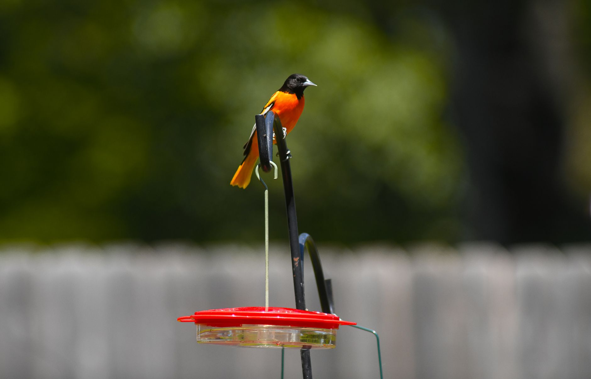

A dramatic night at the ballpark
The atmosphere was electric as the Baltimore Orioles faced off against the Colorado Rockies in a matchup that promised high stakes and even higher tension. For much of the game, it seemed like the Orioles were struggling to find their offensive footing, battling through several innings of scoreless or low-scoring tension. The weight of a sub-.500 record had been hanging over the clubhouse for weeks, creating a sense of urgency that was palpable in every defensive play and every missed opportunity at the plate.
As the game entered the final stages, the tension reached a breaking point. The Orioles were fighting not just against the Rockies, but against their own recent inconsistency. Every pitch felt heavy, and every out felt like a setback. Fans were on the edge of their seats, wondering if this would be another night of missed opportunities or if the young core of the Baltimore roster could finally step up when it mattered most.
Cowser delivers the clutch moment
Then came the moment that will be talked about for the rest of the season. Colton Cowser, the rising star in center field, stepped into the box with the game on the line. With the pressure mounting and the lights shining bright, Cowser connected with a pitch that seemed to defy physics. The ball soared toward the outfield, appearing to be a game-changing home run that would secure the win for Baltimore.
However, the drama didn't end with the hit. In a sequence that left fans breathless, a near-robbery in the outfield and the subsequent chaos of the play highlighted the razor-thin margins of professional baseball. Cowser's ability to maintain composure during such a chaotic sequence was the difference maker. His power at the plate and his defensive awareness in the field have quickly made him a cornerstone of the Orioles' lineup.
It is moments like these that define a player's career and a team's season. Seeing Cowser step up in that high-leverage situation shows exactly why the Orioles are building their future around him.
Breaking the losing skid
This win is more than just a single notch in the win column; it is a psychological breakthrough. For the first time since April, the Baltimore Orioles have officially reached the .500 mark. Reaching equilibrium after a period of struggle is often the hardest part of a long baseball season, as it requires a team to stop looking backward at losses and start looking forward to momentum.
The statistical significance of this win cannot be overstated. By returning to .500, the Orioles have moved out of the danger zone of a losing season and have positioned themselves to fight for a postseason berth. The coaching staff has emphasized the importance of resilience, and this game served as a perfect case study in overcoming adversity.
Looking ahead at the roster
While Cowser was the hero of the night, the Orioles' path to sustained success depends on more than just individual brilliance. The team must find consistency across the entire batting order and ensure that their pitching rotation can carry the load during mid-week stretches. The victory against the Rockies provided a blueprint for how they want to play: aggressive, resilient, and clutch.
Management will likely look to build on this momentum by adjusting the lineup to maximize Cowser's impact. If the young talent continues to develop at this rate, the Orioles will not just be a .500 team; they will be a legitimate threat in the American League. The chemistry between the veterans and the newcomers is starting to click, creating a balanced environment for growth.
The future of the division
As the season progresses, the landscape of the division will continue to shift. Teams that started strong are now facing fatigue, while teams like the Orioles are finding their second wind. This shift makes every single game critical for those looking to secure a wild card spot or a division title.
For fans looking to understand how this momentum might play out over the long term, it is worth keeping an eye on the broader league trends. As we look toward the future of the sport, understanding the hierarchy of teams is essential. You can check out our detailed analysis in our article MLB Power Rankings: Who Leads the Stretch Run in 2026? to see how the current trajectory of teams like Baltimore might influence the coming years.
See Also
If you enjoyed this Baseball News article, check out MLB Power Rankings: Who Leads the Stretch Run in 2026? for more useful reading.